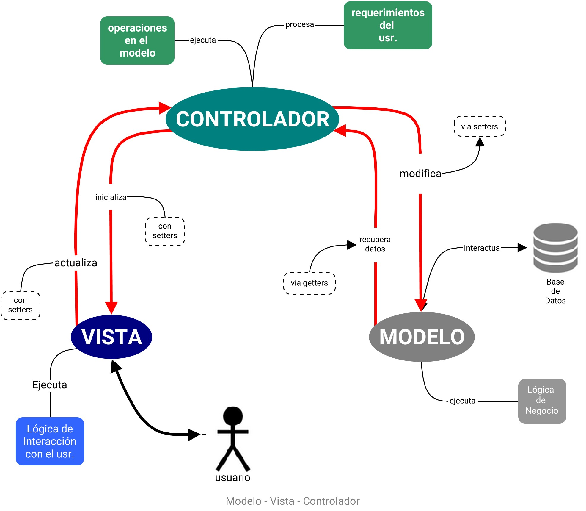

2 Modelo Vista Controlador¶
El Modelo-Vista-Controlador (MVC) es un patrón de arquitectura, de amplia adopción en aplicaciones web, que divide las tareas de un sistema en tres entidades interconectadas con el fin de separar la lógica de la interfaz de usuario de la lógica del sistema o modelo de negocio. Así, estas entidades pueden ser reutilizadas eficientemente e implementar con ellas el desarrollo paralelo.
Esta forma de distribuir responsabilidades separa, en función de los datos, el mecanismo de trato y manipulación del mecanismo de presentación. Entonces, el Controlador funciona entre la Vista y el Modelo.
Una simplificación efectiva sobre el patron MVC la dio el cientifico de datos de la U. de Virginia Connelly Barnes:"El Modelo son los datos, la Vista las presentaciones en pantalla y el Controlador el pegamento entre ellos."
El modelo administra los datos y la lógica de la aplicación. Las funciones que ejecutan la solución de los problemas que debe tratar el desarrollo van programadas aquí y solo aquí.
Además, es el único responsable de interactuar directamente con la Base de Datos.
El modelo, puede ser también definido por lo que no es su responsabilidad: El modelo no interactúa con el usuario de la aplicación, no muestra ni procesa pantallas, no muestra mensajes ni renderiza imágenes.
La inclusión de directivas que interactuen con el usuario violan el fundamento del patrón.
La vista es la capa de presentación del sistema. Contiene la lógica necesaria para mostrar e interactuar con el usuario, y nada más. No tiene intervención alguna de cómo el modelo trata y procesa los datos de la aplicación. Puede ser una salida por consola, html etc.
Finalmente, el Controlador es el intermediario; procesa las entradas del usuario que vienen desde la vista y las dirige al modelo. Cuando este responde, envía estos datos a la vista.

En el ámbito del desarrollo web, la programación que aborda la lógica en el Controlador y en el Modelo es el Desarrollo Backend y en la Vista en Desarrollo Frontend.